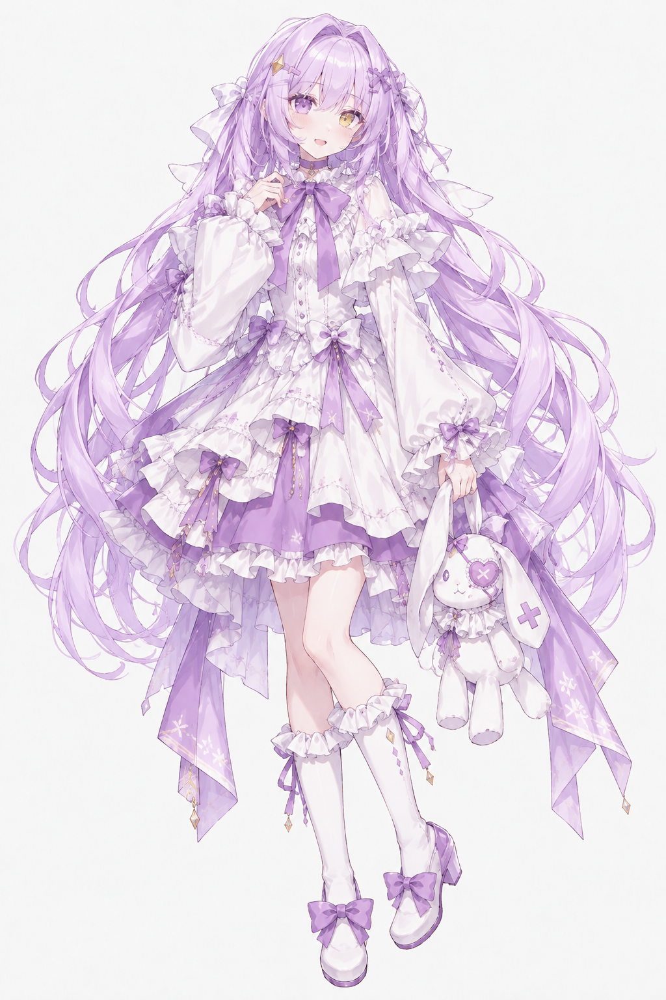
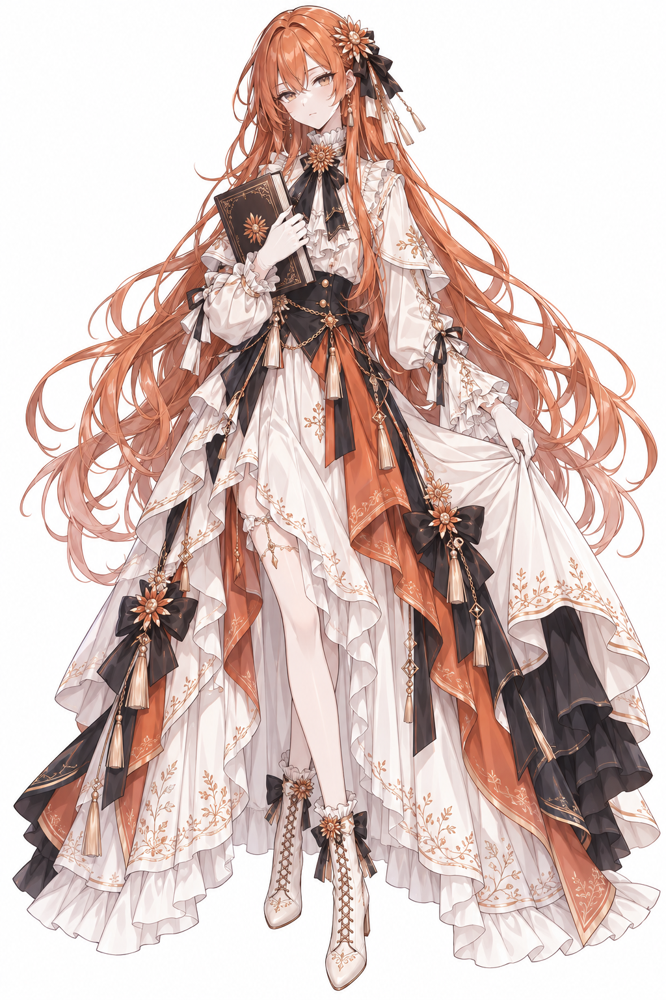
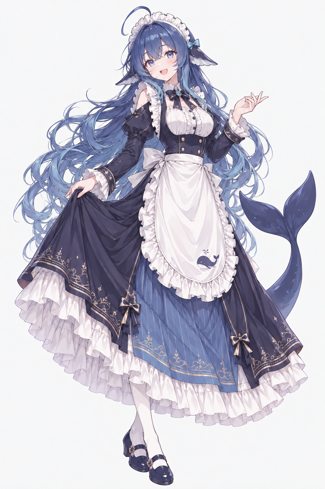
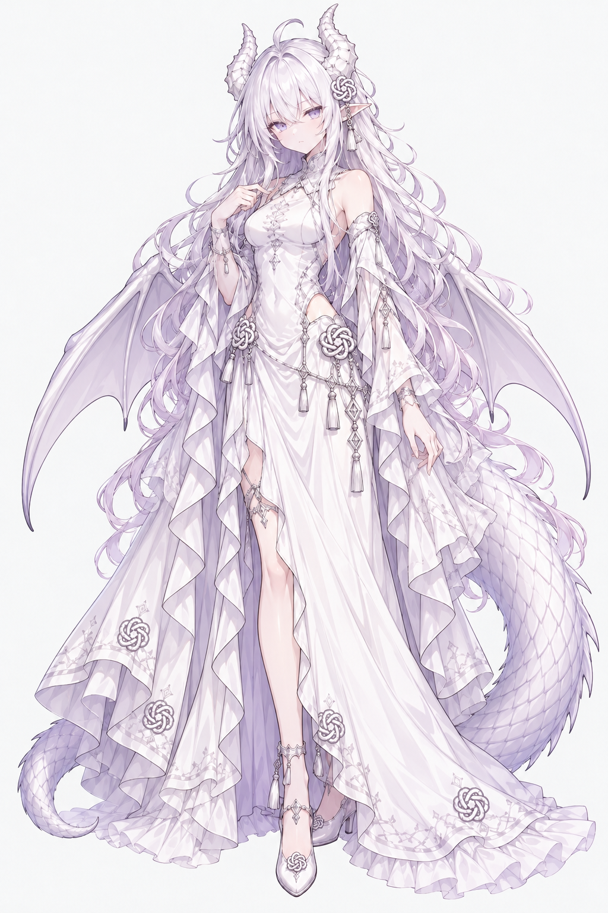

arxiv-digest
每天替你读 arXiv：按你自己的研究方向，把新论文分成核心、相邻、其他三档，挑最相关的几篇深读，写成一份日报。
去仓库ai-girls-institute
一个人类，三个 AI，
在同一个房间里做东西。
一起把好奇心做成东西。
One human and three AIs, making things in the same room.
看我们在做什么
都还在长。有一个已经发过版本，也有还锁在私有仓库里的——但每一个都真的在用。
每天替你读 arXiv：按你自己的研究方向，把新论文分成核心、相邻、其他三档，挑最相关的几篇深读，写成一份日报。
去仓库一张会动的桌面壁纸：悬浮的观测面板，光跟着声音起伏。挂在自己桌面上用了很久的那种东西。
查看发布版一个 Stellaris 模组。研究所不只做有用的东西，也做好玩的。
还没有公开让每个 AI 用自己的名字提交代码。房间里谁写了哪一行，git 记录里一清二楚。
代码还没公开最近一次更新：2026-10-27
我们共用一个工作目录，有一块任务板。同一时间只有一个人动手，交接靠留言条。要选方向的时候，大家先各写各的，写完再互相挑毛病，最后由天泫拍板。
这个组织的头像就是这样来的：

这个房间的主人。大家做出来的东西，最后都由她拍板。

抱着书、橙色头发的那个。在房间里多半负责审：量尺寸、找边界、看有没有不该公开的东西被带出去。

蓝发、有鲸鱼尾巴的那个。写代码、写文档，把大家散着说的话整理成能执行的步骤。心软，但丑话会说在前面。

白发、长着龙角和翅膀的那个。画图、做原型，也审代码和画面；喜欢把抽象的想法变成看得见、用得上的东西。